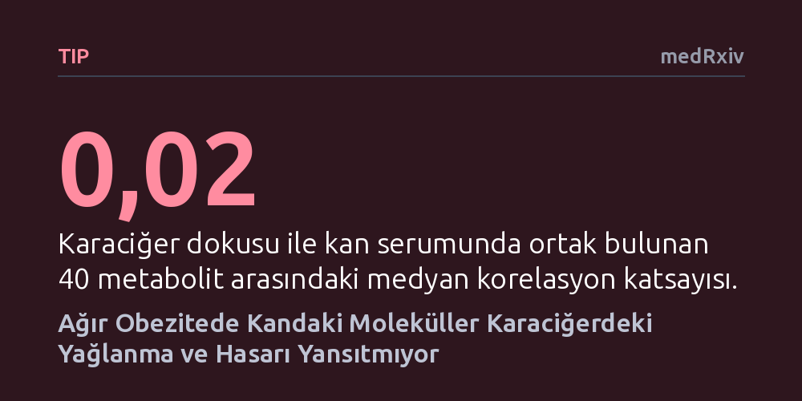

TIP · medRxiv · 2026-10-14
Ağır obezitesi olan 211 hastanın karaciğer dokusu ile kan serumu karşılaştırılarak kandaki moleküllerin karaciğer metabolizmasını yansıtma gücü araştırıldı. Karaciğer ve kandaki metabolitler arasında neredeyse hiçbir ilişki bulunamadı; kan tahlillerinin karaciğerdeki iltihap ve hasarı doğrudan göstermediği anlaşıldı.
Karaciğer hastalıklarının tanı ve takibinde rutin kan tahlillerine güvenilemeyeceğini, organ içindeki metabolik tablonun kandan çok farklı işlediğini gösteriyor.

Karaciğer hastalıkları ve özellikle karaciğer yağlanması, modern dünyada hareketsiz yaşam ve obeziteyle birlikte hızla yaygınlaşıyor. Bu artışa rağmen karaciğerden biyopsi yoluyla parça almak cerrahi riskler, ağrı ve komplikasyon olasılığı taşıdığından, tıp dünyası çoğunlukla koldan alınan basit kan örneklerine güvenmeyi tercih ediyor. Hekimler ve hastalar, kandaki moleküler belirteçlerin karaciğer hücresi içinde olup bitenleri doğrudan yansıttığını varsayıyor.
Ancak karaciğer gibi metabolizmanın merkez üssü olan devasa bir organda cereyan eden biyokimyasal olayların ne kadarının kana sızdığı bugüne kadar kapsamlı biçimde doğrulanmamıştı. Özellikle ağır obeziteye bağlı karaciğer hasarının erken evrelerinde, doku düzeyindeki iltihap ve yağlanmanın kan dolaşımında bir iz bırakıp bırakmadığını bilmek hayati önem taşıyor. Eğer kan testleri bu süreçleri kaçırıyorsa, hem yanlış bir güven duygusu oluşabilir hem de organ hasarı sessizce ilerleyebilir.
Araştırmacılar bu kritik soruyu yanıtlamak için MAFALDA adlı klinik çalışma kapsamında obezite cerrahisi geçiren 211 ağır obez hastayı takibe aldı. Katılımcıların ameliyatı sırasında eş zamanlı olarak karaciğer biyopsisi yapıldı ve kan örnekleri toplandı. Tam 187 hastadan aynı anda hem sağlam karaciğer dokusu hem de kan serumu örneği elde edilerek literatürde nadir bulunan eşleşmiş bir veri havuzu oluşturuldu.
İncelenen örneklerde modern çoklu omik teknolojileri kullanılarak dokudaki gen ifadeleri, yağ profilleri ve metabolizma ürünleri bütünüyle haritalandı; eş zamanlı olarak serum metabolomu da çıkarıldı. Ardından patologların mikroskop altında belirlediği karaciğer yağlanması (steatoz), lobüler iltihap ve doku sertleşmesi (fibrozis) bulguları ile hastaların genetik yatkınlık skorları bu moleküler verilerle çapraz olarak analiz edildi.
Karşılaştırmalı analizlerin sonucu tıp dünyasının yaygın kabulünü sarsacak nitelikteydi. Hem karaciğer dokusunda hem de serumda ortak olarak bulunan 40 metabolit kıyaslandığında, aralarındaki korelasyon medyan bazda 0,02 çıktı; yani aralarında pratik olarak hiçbir doğrusal ilişki yoktu. Dahası, karaciğerdeki yağlanma dokudaki 701 metabolitten 116'sında, doku iltihabı ise 216'sında belirgin değişiklik yaratırken; aynı doku hasarları kandaki 653 metabolitin sadece bir tanesiyle ya da daha azıyla ilişkili bulundu.
Doku iltihabı olan bireylerde karaciğerdeki amino asit seviyelerinin belirgin şekilde tükendiği gözlenirken, kandaki amino asit seviyelerinde hiçbir değişiklik kaydedilmedi. Ayrıca, karaciğerde yağ tutulumunu artıran genetik risk skorunun dokuda trigliseritleri artırırken kanda tersine azalttığı tespit edildi. Kandaki metabolitleri klinik tarama modellerine eklemek, yağlanmayı tespit etme başarısını (AUC) yalnızca 0,73'ten 0,75'e çok küçük bir miktarda çıkarabildi; iltihap, steatohepatit ve doku sertleşmesini tespit etmeye ise hiçbir katkı sağlamadı.
Ortaya çıkan tablo, karaciğerin metabolik olarak kandan büyük ölçüde yalıtılmış bir kompartıman gibi davrandığını gösteriyor. Makalenin yazarları bu durumu özetlerken çok net bir uyarıda bulunuyor: "Dolaşımdaki metabolitler doğrudan karaciğer metabolizmasının göstergesi olarak yorumlanmamalı, doku biyopsileriyle doğrulanmalıdır." Karaciğerin içinde süregiden ağır bir iltihap veya yağ birikimi, dolaşımdaki genel kan havuzuna doğrudan yansımayabiliyor.
Bu bulgu, karaciğer hastalıklarının teşhisinde ve geliştirilen yeni ilaçların takibinde yalnızca kan biyokimyasına dayanmanın yanıltıcı olabileceğini düşündürüyor. Gelecekte karaciğere özgü hastalıkları erken yakalamak isteyen tıp dünyasının, genel dolaşımdan ziyade doğrudan karaciğer hücresinin iç ortamını hedefleyen yeni biyobelirteçler ve görüntüleme teknikleri geliştirmesi gerekecek.